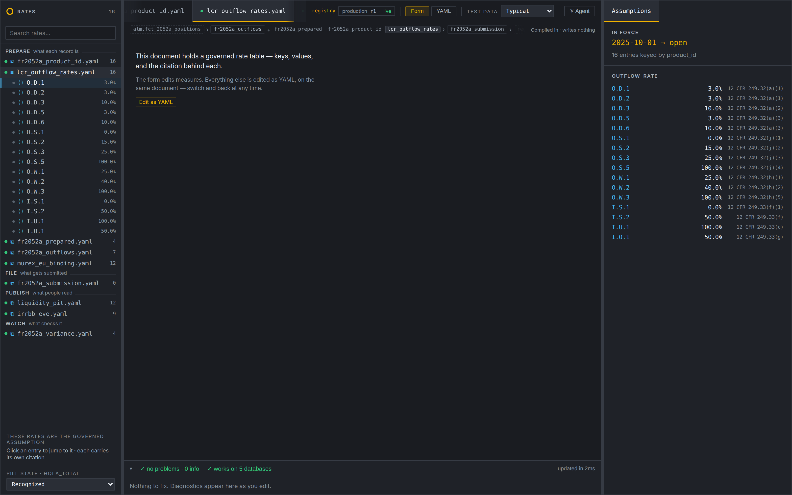
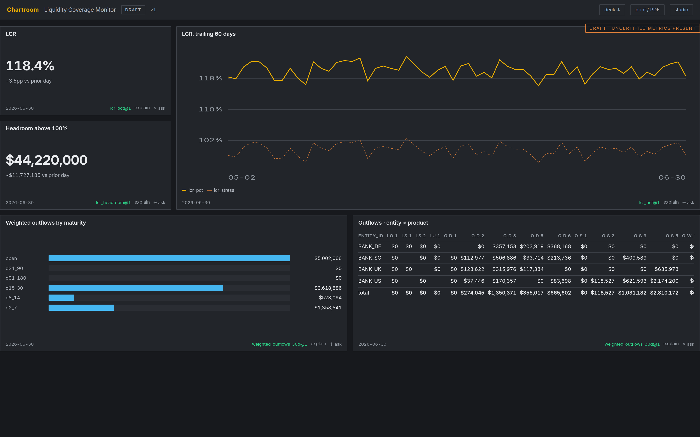
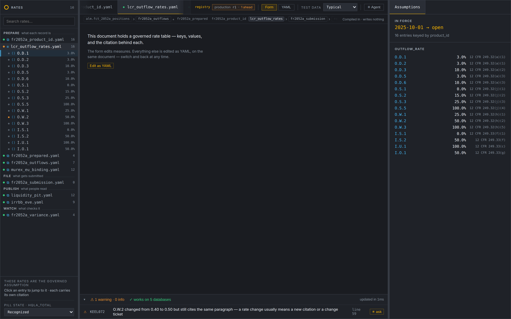
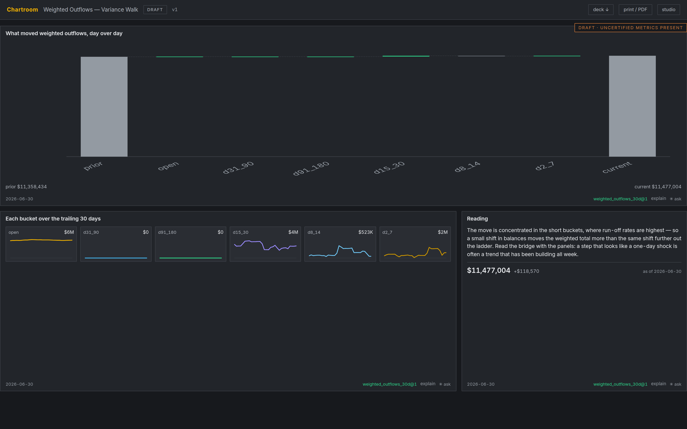
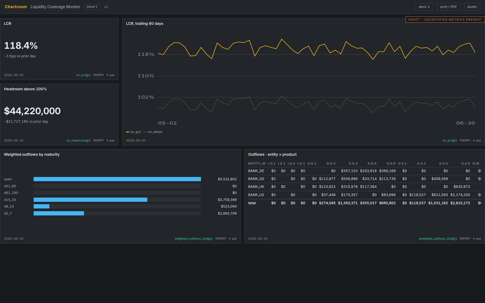
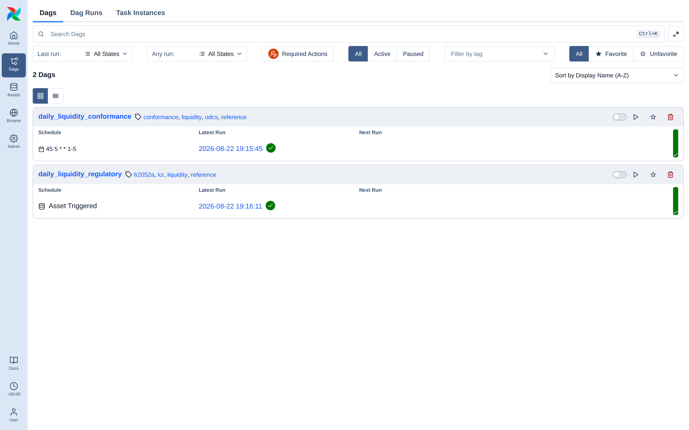
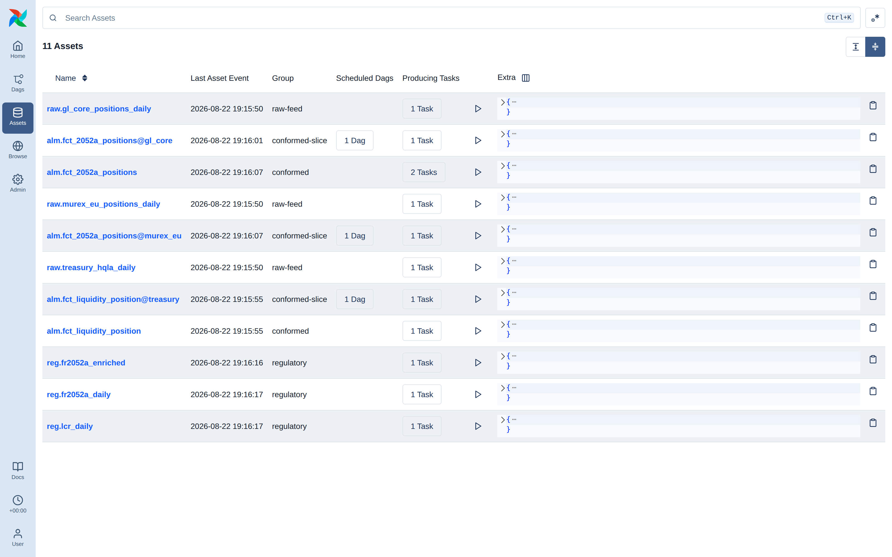

A metrics platform for regulated finance, where the figure a regulator receives and the figure a board approves are produced by the same definition — and cannot quietly stop agreeing.
Every regulated number is defined once, in a governed document with a citation, a revision history and a named author — and every consumer of that number reads the definition itself rather than a copy of it.
The filing and the dashboard hold no arithmetic of their own. There is nothing to retype, so there is nothing to drift. When a rule changes, the change is reviewed once, deployed once, and lands everywhere at the moment a named human decides it should — not before, and not in some places and not others.
A regulated number has a long way to travel between the rule that defines it and the slide a committee approves. Today it is retyped at every hop.
lcr_pct is defined once, under an SR 11-7 tier, with a citation and a
revision history. Then somebody writes 100.0 * [HQLA] / [Net Outflows]
into a BI calculated field, and that is the number the committee sees. A
reporting job carries its own copy into the filing. The three drift — a rounding rule
here, a filter there — and the drift is undetectable, because nothing compares them.
A wrong number gets caught and fixed. Undetected drift gets defended.
Both sides are certain they are reading the governed figure, so the disagreement surfaces as a supervisory question rather than as an internal control. The dashboard half has its own version of the same failure: hand-built one-off dashboards, fast and ungoverned, that cannot be reviewed or diffed, reach data through ad-hoc paths, embed calculation logic that duplicates and then departs from the governed definition, and have no route from my thing to the team's thing to the certified thing.
The Metrics Definition Layer is where a definition is authored: a liquidity analyst writes an FR 2052a rule, watches the number it produces, and reads the plan the nightly pipeline will run. Chartroom is where a definition is consumed: an agent-guided studio for dashboards whose every number traces back to a registry function.
They are one product because they answer the same question at two ends of the same pipe — is this number right, and can I prove it? — and because the second is only credible if the first is real. A dashboard that cites a governed definition is worth something only when that definition is itself authored, versioned and reviewed somewhere you can point at.
Seven document kinds, each with its own answer to “is this right?” — the value and its derivation trace, the coverage of a rule set, the citation behind each rate, the rows that would actually be filed.
The agent never writes dashboard code. It writes a declarative spec where every number is a registry reference and every visual comes from a reviewed catalog. The spec is the unit of review, versioning and promotion.
A definition compiles once — to SQL, Polars and PySpark, and to the semantic views a BI tool points at. When the warehouse serves a query it runs the engine's own compiled SQL, not a reimplementation that agrees today.
The agent proposes; named humans approve. This is the SR 11-7 posture: the agent is a development tool, never an approver. Approval, stewardship decisions and promotion are refused to agent identities at the API — permanently, not by configuration — and the registry's tool surface holds the same line: an agent connection is never even offered the save, cut or promote tools, whatever the write flag says.
The same seam runs between humans. A weakened tier-1 rule needs a second person's review before a release can pin it, and whoever cuts that release cannot be the only name deploying it.
Each of these is a cost that regulated institutions currently pay in people and elapsed weeks. The platform does not make them cheaper; it removes the conditions that create them.
Every figure on every dashboard names its definition, the revision it was computed at, and the person behind that revision. Answering a supervisory question becomes a lookup instead of an investigation.
The question a model-risk reviewer would raise in a quarterly review is raised while the author is still in the document — with the specific line, the old value and the new one.
An analyst can run a proposed rule against live numbers with no path to a regulatory filing, and cannot mistake the exploration for the filed figure, because the board states which revision it is reading and whether it is certified.
Weakening a governed assumption is refused by default. The override is recorded in the channel history beside the actor and the reason — the audit artifact, produced as a by-product of the act rather than reconstructed afterwards.
Everything above is a claim. What follows is the claim executed, in screenshots of the running system — not mockups. One governed rate changes, and the change is followed down both consumption paths: the nightly pipeline that files FR 2052a, and the dashboards two liquidity desks read.
The change is deliberately small and entirely typical: the run-off rate on
non-operational wholesale funding (O.W.2) moves from 40% to 50%,
a supervisory reinterpretation. It is one line in one governed document.
| # | Use case | Reads | Path |
|---|---|---|---|
| 1 | LCR coverage Is the buffer adequate today? |
lcr_pct, lcr_headroom, weighted_outflows_30d | Pipeline files reg.lcr_daily; desk reads Liquidity Coverage Monitor |
| 2 | FR 2052a weighted outflows What are we filing, and what moved? |
weighted_outflows_30d by product × bucket | Pipeline files reg.fr2052a_daily; desk reads Weighted Outflows — Variance Walk |
lcr_outflow_rates is a governed parameter set: sixteen rates, each carrying
the paragraph it implements. The header reads production r1 · live — the
workspace and the deployed channel agree.

Both dashboards, at that release:

| Output | As filed at production r1 |
|---|---|
reg.fr2052a_daily · weighted outflows | $44,410,173.36 |
of which O.W.2 | $14,247,458.56 |
reg.lcr_daily · consolidated LCR | 1456.7% |
The author edits one rate. Two things happen before anything is deployed. The header
changes to production r1 · 1 ahead — the workspace is one revision beyond
what the channel serves, stated rather than implied. And a diagnostic appears against
the line:
O.W.2 changed from 0.40 to 0.50 but still cites the same paragraph — a rate change usually means a new citation or a change ticket.

This is the part worth reading twice, because the two consumers bind at different moments, and the gap between them is the governance.
Chartroom moves now. The studio reads the workspace, so the dashboards show the proposed number the instant it is saved — on boards that state, continuously, which definitions they are reading and whether those definitions are certified.

DRAFT · UNCERTIFIED METRICS PRESENT — as it does before the change too: a board reading uncertified definitions says so continuously, not only when one of them moves.
The pipeline does not move. It dereferences the production
channel, which still serves r1. Re-running the nightly job with the edit saved files
exactly what it filed before.
| Before the edit | After the edit, before promotion | |
|---|---|---|
| Channel release | r1 | r1 |
| Rate-table revision served | 1 | 1 |
| Filed weighted outflows | $44,410,173.36 | $44,410,173.36 |
Cutting release r2 and promoting it is refused:
refusing to promote r2 to production without acknowledgement — versus what production currently serves, this weakens something: · lcr_outflow_rates: Changes 1 governed rate O.W.2: 0.40 → 0.50 1 rate moved without its citation moving. A governed assumption changing under an unchanged authority is the case worth explaining. Re-send with acknowledgeReview: true if intended.
The same finding as KEEL072, now blocking deployment rather than advising. The steward promotes with an explicit acknowledgement, and the reason is written into the channel history beside the actor:
r2 m.reyes Supervisory reinterpretation of non-operational wholesale funding; the paragraph is unchanged, the reading of it is not. Reviewed with Liquidity Regulatory Reporting. [review acknowledged: Changes 1 governed rate] r1 m.reyes Baseline: FR 2052a rules and LCR rates as filed
The edit itself carries its own author, at revision 2. Identity is asserted by the proxy in front of the registry, never by the client, so the name against a rule change is part of the control rather than a label.
With the channel repointed, the next nightly run picks the new rate up with no pipeline change of any kind: no deploy, no DAG edit, no code review.
| At production r1 | At production r2 | Change | |
|---|---|---|---|
| Channel release / rate revision | r1 / 1 | r2 / 2 | promoted |
reg.fr2052a_daily · weighted outflows | $44,410,173.36 | $47,972,038.05 | +$3,561,864.69 |
of which O.W.2 | $14,247,458.56 | $17,809,323.25 | +$3,561,864.69 |
reg.lcr_daily · consolidated LCR | 1456.7% | 1286.0% | −170.7pp |
| Net outflows, 30d | $26,836,526.70 | $30,398,391.34 | +$3,561,864.64 |
The whole movement sits in O.W.2 — the product whose rate changed — and the
totals move by exactly that amount. That is the arithmetic a reviewer checks first, and
it holds because one definition produced both rows.


A scenario is an input, not a model. The pipeline can run the identical governed release over a stressed book — deposits running harder than contract, inflows that do not arrive, a haircut on the buffer — in its own warehouse, so the two runs share nothing except the registry release.
| Base | Stress | |
|---|---|---|
| HQLA | $390,919,734.51 | $344,009,366.38 |
| Filed weighted outflows | $47,972,038.05 | $59,965,047.53 |
| Consolidated LCR | 1286.0% | 721.7% (−564.3pp) |
A comparison whose two runs came from different releases is refused, because a base-versus-stress figure computed across two rule versions is not a comparison. This is the axis where drift is least visible and most consequential: in most institutions the stressed LCR and the reported LCR are produced by different machinery, and no one can say whether a difference is the scenario or the implementation.
It is not a forecast. Nothing here projects a balance sheet forward; multi-period projection is a modelling capability this does not have.
lcr_outflow_rates revision 2. Neither holds a copy of the rate.| Role | What they do here |
|---|---|
| Definition author ALM / liquidity analyst | Writes rules, watches the number and its derivation trace, reads what a change would move |
| Dashboard author | Talks to the agent, approves the brief, iterates against live numbers |
| Metric steward | Decides proposals; approval is a registry write |
| Design steward | Owns the guide and the widget and pattern catalogs |
| Reviewer / committee | Reads a versioned artifact with its brief, lint report and commentary attached |
For the second and third lines, the change is that the audit artifact is produced by the act rather than assembled after it. Who changed a governed assumption, when, under what authority, with whose review, and what moved as a result are all recorded at the moment of the change — and the same record is what the pipeline and the dashboards actually dereference. There is no separate lineage system to keep in step, because the lineage is the mechanism.
Nine phases are built, verified and merged. The engine and both surfaces run.
Outward integrations — catalog emission, git materialization at team level and above, decommissioning, and third-party import. Streaming remains a deliberate deferral behind an executor seam written to accept it.
These are not backlog items awaiting priority. Each one, if allowed, would dissolve a guarantee the rest of the product rests on — which is why they are worth stating to a buyer rather than hiding in an architecture document.
Every layer would rather say what it cannot do than produce something plausible.
The compiler refuses to emit SQL for a function it cannot express, instead of approximating it. A gauge with no declared limit direction draws the gap and declines to call it a breach. A stacked area whose bands go negative renders a refusal instead of clamping them and overstating the total. A model outage degrades to a banner, never a block.
The dogfood boards are the acceptance test: hand-authored against the real registry, seeded on first boot, and covered by a test that fails when a measure is renamed. Verification is one command.
Every architectural deviation from the pinned design decisions is recorded — 57 accepted and five proposed — including the entries that record a mistake and its correction. The figures in section 04 were produced by running the system; the screenshots are regenerated from a documented recipe, not captured by hand.